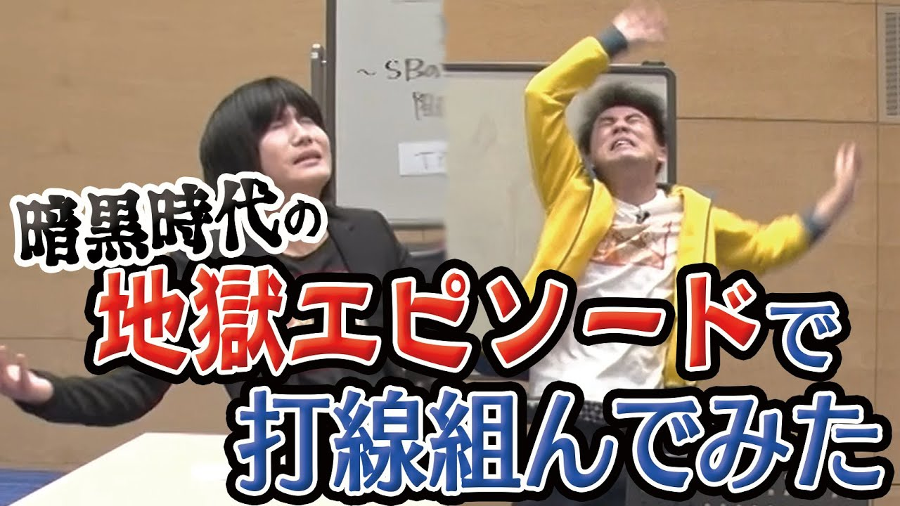
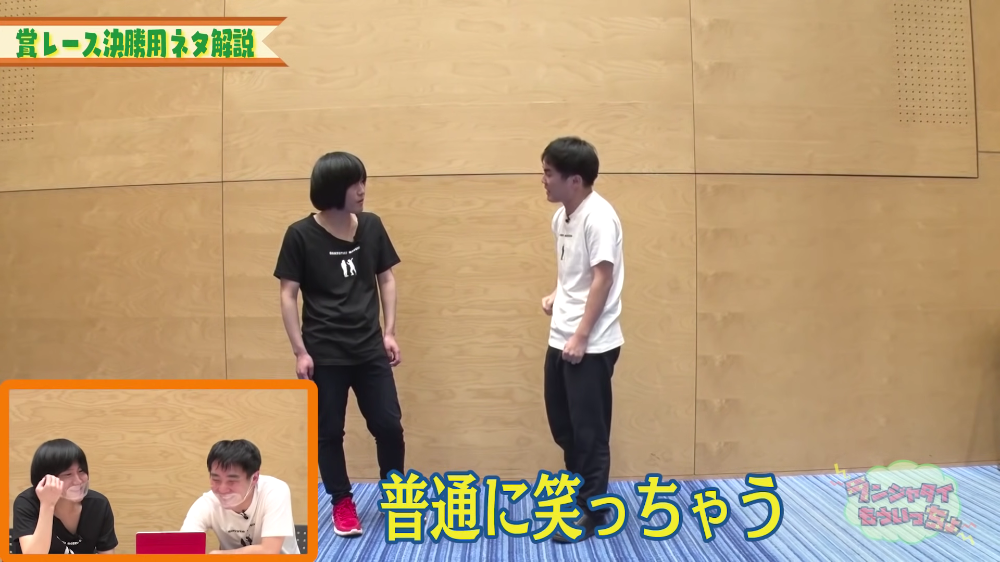

ランジャタイ 伊藤幸司 国崎和也 事務所 グレープカンパニー 結成年 2007年 出身 NSC東京校12期中退 同期 ジャングルポケット、見取り図、金属バット など 賞歴 2017年M-1グランプリ準決勝進出 2020年M-1グランプリ準決勝進出
どんなところがおすすめ？ 最近のバラエティ番組内で名前を挙げられることが多くなり、お笑い界隈で着実に人気が出始めている若手漫才師のランジャタイさん。そんなお二人のおすすめしたいところ・1つ目は、奇想天外な独自のネタです！ランジャタイさんのやるネタは設定も世界観もとにかくハチャメチャなので、何も考えずに笑うことができます！2つ目は、平場の返しの上手さです！平場の返しというのは、例えば生放送などで、司会の人から話を振られた時に、台本に無いくだりやアドリブで返すことです！私がランジャタイさんのその上手さを見たのが、2020年M-1グランプリ準決勝の生放送でした。視聴者がつけた点数の発表で、インディアンスという芸人さんがトップになり、「国民最高～～！！」とコメントをしました。その後、点数が1番低かったランジャタイさんが、司会の人から話を振られ、その時ランジャタイの国崎さんが、「国民最低～～！！」とコメントしたんです！あの時、あの緊張感のあった場が一気に笑いに包まれたのを見て、凄い！と私は思いました。しかも凄いのはそれだけではなくて、国民最低がTwitterのトレンドに入っていたんです！ネタの評価は低かったけれど、安定した返しで爪痕を残していたので、このコンビは売れそうだなぁと思いました！3つ目は、Youtubeが面白いところです！最近の芸人さんはテレビ番組だけでなく、Youtubeで自身のチャンネルを持ったり、テレビ放送局の持つチャンネルに出演したりしています！たくさんの芸人さんがYoutubeでも活動するようになってきていますが、その中でもランジャタイさんは特に面白いと思います！ランジャタイさんは自身のYoutubeチャンネルも持っていて、そのチャンネル内で漫才の動画をあげていたりもしていますが、テレビ朝日のスタッフさんが作ったYoutubeチャンネル「もういっちょTV」にも、毎週金曜日に出演されています！
 おすすめ動画① 私がおすすめするランジャタイさんのYoutubeの動画・1つ目は、『暗黒時代のエピソードで打線を組む』です！この動画は上記で紹介した「もういっちょTV」にて公開されているものです。再生時間は約40分と長めですが、見ているとあっという間に過ぎていしまいます！それは、動画内で次々と出てくるランジャタイさんの地獄エピソードの面白さもありますが、なによりもエピソードトークの話し方が上手いからだと思います！右の画像は、この動画のサムネイルなのですが、見ていただいたら分かる通り、動きが多いんです！そのおかげで話が入ってきやすく、聞き入ってしまいます！ぜひ皆さんもこの動画を見て笑って下さい！！ おすすめ動画② 私がおすすめするランジャタイさんのYoutubeの動画・2つ目は、『クイズサンバイザー重子ちゃん！』です！この動画はランジャタイさん自身のチャンネルにて公開されているものです。タイトルだけでは内容が全く分からないと思われますが、右の画像のサムネイルに書いてある、動きから名前を当てろ！が、まさにこの動画の内容です！そもそもサンバイザー重子ちゃんというのは、ランジャタイさんのネタに出てくるキャラクターのことで、その名前の由来は、動きからなんとなく推測することができます。こういった、動きから名前を当てられそうなキャラクターを即興で考え、相方がそのキャラクター名を答えるという企画なんです！私たち視聴者側からすれば答えられそうにないキャラクター名でも、このお二人はお互いの考えたキャラクター名を当てちゃうんです！ランジャタイさんのお互いの考えが怖いぐらい意思疎通しているその凄さを、ぜひ皆さんにも見ていただきたいです！  おすすめ動画③ 私がおすすめするランジャタイさんのYoutubeの動画・3つ目は、『M-1グランプリ決勝用の漫才 マヂカルラブリーno寄席で話題のネタを解説』です！この動画は上記で紹介した「もういっちょTV」にて公開されているものです。タイトルにもある通り、M-1グランプリ決勝用のネタであり、2020年M-1グランプリで優勝したマヂカルラブリーさんの有料配信「マヂカルラブリーno寄席」で披露し話題になったネタでもある「ゴリラ漫画」を、自分たちで解説するという内容です！ランジャタイさんのネタを見られるだけでなく、お二人の解説付きということで、とにかくハチャメチャで奇想天外なネタをするランジャタイさんにはもってこいの企画になっています！